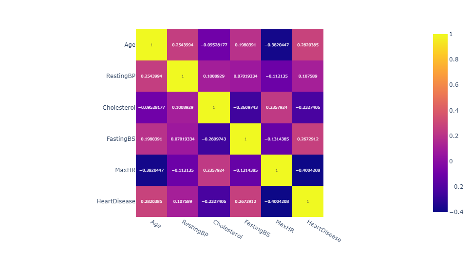
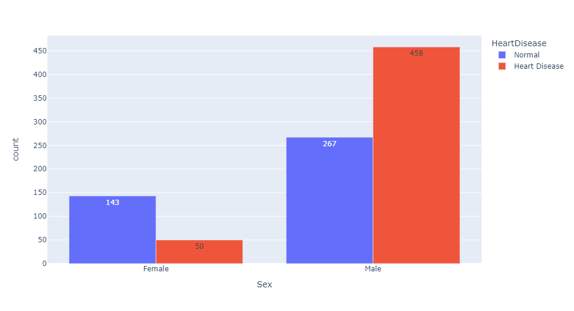
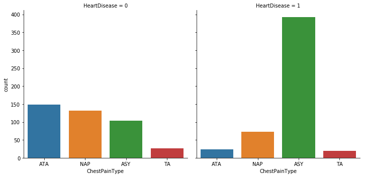

전세계 사망자들의 사망원인 중 1위는 심혈관질환(CVD)이다. 매년 세계에서 1790만명이 심혈관질환으로 사망한다. 이는 전체 사망자의 31%를 차지한다. 심혈관질환 사망자 5명중 4명이 심장마비와 뇌졸중으로 사망하며, 이 중 3분의 1은 70세 미만이다. 심부전은 심혈관질환으로 인해 발생하는 일반적인 증상이다. 이 데이터셋에는 심부전을 예측하는 데 사용할 수 있는 8개의 feature가 있다. 본 시각화 프로젝트의 목표는 각 feature들의 특성을 분석하고, feature와 심부전 간의 상관관계를 도표 및 그래프로 시각화하는 것이다.
Dataset Blog Github총 918개의 data가 있으며 결측치는 없다.
| Feature | Detail | Data Type |
|---|---|---|
| Age | 환자의 연령 | Integer |
| Sex | 환자의 성별 [M:남성, F:여성] | Categoricla |
| ChestPainType | 가슴 통증 유형 | Categoricla |
| RestingBP | 휴식시 혈압[mm Hg] | Integer |
| Feature | Detail | Data Type |
|---|---|---|
| Cholesterol | 혈중 콜레스테롤[mm/dl] | Integer |
| FastingBS | 공복중 혈당[1: 120mg/dl 보다 큼, 0: 작음] | Categoricla |
| RestingECG | 휴식중 심전도 결과 | Categorical |
| MaxHR | 최대 심박수 | Integer |
분포를 보고 싶은 feature를 클릭하세요.
수치형 데이터 간의 correlation을 히트맵을 통해 관찰함으로써 심부전과 상관관계가 있는 feature가 무엇인지 분석한다.
MaxHR과 HeartDisease 간의 높은 음의 상관관계가 눈에 띈다. 낮은 최대 심박수와 심부전이 관련이 있다고 가설을 세울 수 있다. 또한 심박수만큼은 아니지만 나이와 공복중 혈당수치도 심부전과 어느정도 상관관계가 있음을 확인할 수 있다.
성별별로 심부전 발병 비율을 확인하여 남성과 여성중 어느 성별이 심부전 환자의 비율이 높은지 확인한다.
그래프에 따르면 여성보다 남성의 심부전 발병 비율이 확연히 높은 것을 알 수 있다. 여성보다 남성의 데이터가 많은 것을 고려해도 충분히 의미있는 차이이다.
ChestPainType 변수는 총 4가지의 범주를 가지고 있다. TA는 전형적인 협심증, ATA는 전형적이지 않은 협심증, NAP는 협심증 이외의 통증, ASY는 무증상을 의미한다.
심장 통증 유형별 심부전 여부를 확인하면, 심부전 환자가 아닌 경우 유형별로 고른 분포를 보이지만, 심부전 환자의 경우 압도적으로 무증상인 경우가 많다. 심장 통증이 있는 환자보다 증상이 없는 환자에 대해 심부전을 의심해볼 수 있겠다.
심전도 상태는 총 3개의 범주를 가지고 있다. 그러나 심부전 환자와 정상인 사이의 유의미한 비율의 차이가 보이지 않는다.